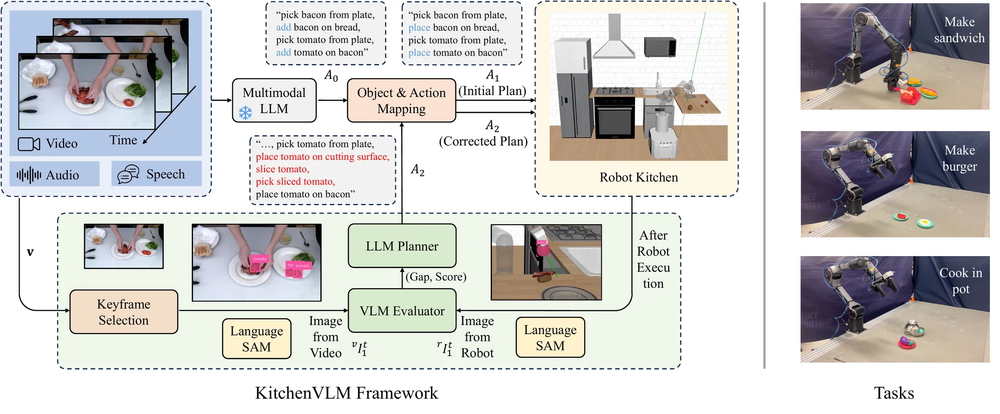
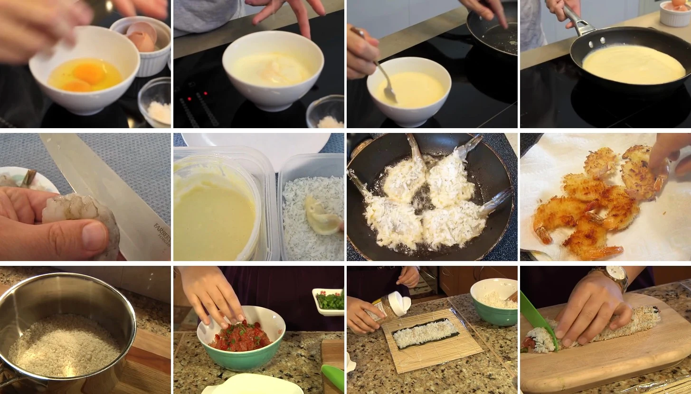
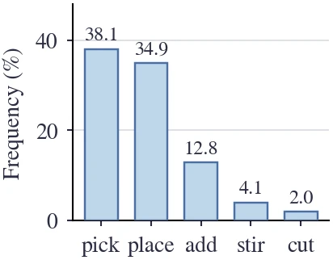
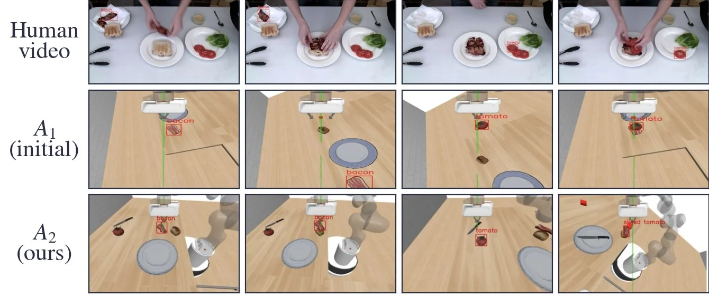
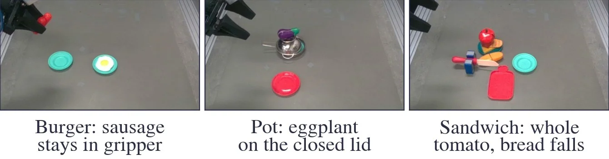
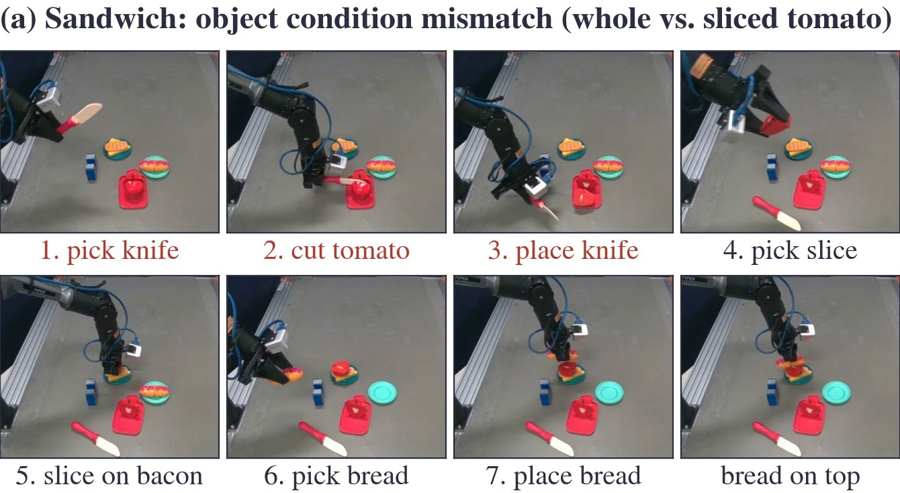
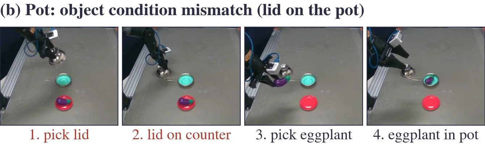
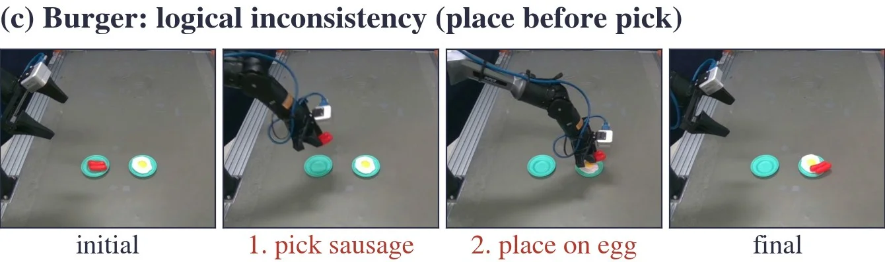

KitchenVLM: Vision-Language Corrections for Robotic Execution of Human Tasks
1University of Oxford, Oxford, UK 2Mitsubishi Electric Research Laboratories (MERL), Cambridge, USA
This work is part of an internship at MERL. *Equal advising.
Abstract
In this paper, we present KitchenVLM, a multimodal framework for generating and optimizing executable robot actions from human instructional videos. While recent advances in video understanding and step generation have shown promising results, translating these steps into robot-executable actions remains challenging, particularly for complex, long-horizon tasks such as those in kitchen environments. These challenges arise from domain discrepancies between human videos and robotic settings, as well as mismatches between human actions and robot capabilities. KitchenVLM addresses these issues with an agentic feedback loop, where vision-language models (VLMs) serve as evaluators and planners to detect object or state mismatches, assess action feasibility, and generate corrective steps that refine execution. By incorporating keyframe selection, language-guided segmentation, and robot verification, KitchenVLM refines robotic plans to ensure contextual accuracy and executability. Through perspective evaluation and correction, our framework enhances the adaptability and robustness of robotic task execution in kitchen environments, advancing the integration of VLMs into robot learning and executable plan correction.
Method

KitchenVLM consists of three steps:
- Object and action mapping. Each human object is mapped to the most similar robot object, and each human verb to a robot skill (e.g., add → place), giving the initial plan A1.
- Execution with feedback. The robot, simulated or physical, executes A1 and records an image and the execution outcome after every step.
- VLM evaluation and LLM replanning. A VLM compares each robot observation with a keyframe of the human video; an LLM corrects each step and recomposes the corrected plan A2.
Simulation
We use RoboCasa with a Franka Panda arm and 867 YouCook2 videos whose actions are covered by the robot's skills. GPT-4o serves every LLM and VLM function.


Left: consecutive steps of three YouCook2 videos (one per row). Right: frequency of action verbs (%), where others covers the remaining 99 verbs.
| Judge | A1 | A2 w/o S | A2 w/o I | A2 |
|---|---|---|---|---|
| LLM (G, A) | 0.45 | 0.25 | 0.56 | 0.67 |
| VLM (G, I0, A) | 0.35 | 0.30 | 0.58 | 0.65 |
| VLM* (G, I0:n) | 0.36 | 0.46 | 0.53 | 0.64 |
| VLM* (G, I0:n, A) | 0.38 | 0.28 | 0.49 | 0.62 |
| Plan | Burger | Sandwich | Fried chicken | Avg. |
|---|---|---|---|---|
| A1 (initial) | 0.52 | 0.53 | 0.44 | 0.50 |
| A2 (ours) | 0.61 | 0.63 | 0.57 | 0.61 |
| All 867 clips | 357 aligned clips | |||||
|---|---|---|---|---|---|---|
| BLEU-4 | METEOR | TCR | BLEU-4 | METEOR | TCR | |
| Ours | 0.705 | 0.503 | 0.28 | 0.720 | 0.526 | 0.29 |
| w/o S | 0.230 | 0.278 | 0.03 | 0.211 | 0.274 | 0.03 |
| w/o I | 0.633 | 0.485 | 0.23 | 0.643 | 0.500 | 0.25 |

Real Robot
The same pipeline runs on an AgileX PiPER arm with an overhead RealSense camera and the skills {pick, place, cut}. We use three YouCook2 clips: Sandwich (the robot has a whole tomato, the human uses slices), Pot (the robot's pot is closed by a lid), and Burger (the annotated steps place the cheese before picking it).

| Plan | Burger | Pot | Sandwich | Avg. |
|---|---|---|---|---|
| A1 (initial) | 0.00 | 0.00 | 0.25 | 0.08 |
| A2 w/o S | 0.50 | 0.00 | 0.50 | 0.33 |
| A2 state-only | 1.00 | 0.00 | 0.33 | 0.44 |
| A2 w/o I | 1.00 | 0.97 | 0.25 | 0.74 |
| A2 (ours) | 1.00 | 1.00 | 0.62 | 0.88 |
Burger is corrected from the execution outcome alone, Pot needs the robot image, and Sandwich needs the human keyframe: without it, no correction inserts the cutting steps (0/30), whereas the full method does so in 15/30.


